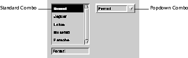

Combo
The Combination Box class provides facilities for creating and manipulating a combination box. A combination box is a dialog item that enables the user to pick a selection from a list of choices. These choices can be defined by the application or entered by the user.
A combination box has three parts: a list of values (vcomboboxValues), a choice box, and an entry box. The choice box displays a list of values. The entry box receives user input. The choice box and entry box are placed within a container (vcontainer); they each have a current value. These current values are usually identical since each value notifies vcombobox (or vcomboboxPopdown) to update the other one.
A combination box is available as either a standard combo box (vcombobox) or a popdown combo box (vcomboboxPopdown). A standard combo displays the choice box and the entry box together on the screen. A popdown combo displays only the entry box, and provides a look-and-feel defined mechanism for "popping down" (displaying) the choice box. This mechanism usually consists of selecting a button from the button box, which is located next to the entry box. After the user makes a selection from the popped down choice box, the choice box is no longer displayed. Popdown combo boxes are typically used to conserve screen real estate. Figure 6 shows the two types of combination boxes.
Figure 6. Samples of combination boxes

Combination boxes contain a modifiable attribute. If the modifiable attribute is not set, then the user cannot add new selections to the value list. However, if the modifiable attribute is set there are several ways of adding new values. The method by which values are selected and new values are added to the list is controlled by the current selection behavior and the current acceptance behavior of the combination box.
The standard vcombo item used in previous releases is subclassed from vdialogItem. Also, the vcomboPopdown item is subclassed from this standard vcombo. Beginning with Release 2.5, the standard vcombo item is subclassed from vcombobox, and the vcomboPopdown item is subclassed from vcomboboxPopdown.
vcombo is now deprecated. All standard and popdown vcombo entry points from releases prior to Release 2.5 have been mapped into vcombobox entry points, and should be fully compatible with this and future releases of Galaxy. Note that all combination box behavior prior to Release 2.5 is preserved.
A combination box has three associated behaviors: one each for accept, select, and scroll situations. The behavior of a combination box affects how the combination box maps user input (typing in the entry box or selecting from the choice box, for example) to vcomboboxValue from its list of values. Note that the definition of these behaviors may vary according to look-and-feel.
An accept situation is when the combination box makes the selected (or entered) value the current value. This occurs when the user presses Return or Enter, or when the focus leaves the combination box. A select situation is when the combination box tries to map user input to a vcomboboxValue. This occurs when the user selects a value from the choice box or enters text into the entry box. Every keystroke in the entry box (with the exception of Return and Enter) triggers a select situation. A scroll situation is when the list in the choice box is scrolled. If the user types in the entry box, for every keystroke (except Return and Enter), a scroll situation is triggered as the combination box tries to match a choice box value to the entry box value (depending on behavior).
Tables 3 through 5 document the effects of each behavior in each situation for the various parts of a combination box.
Combination Boxes Prior to Release 2.5
Prior to Release 2.5, combination boxes were implemented as vcombo and vcomboPopdown items, with corresponding API entry points. However, the item's values were based solely on a list of strings. The vcombobox and vcomboboxPopdown items introduced in Release 2.5 provide facilities for maintaining lists of any type of data. Refer to "Advanced Use of the Combination Box Class" for details. Combination Box Behavior
The communication between the component parts of a combination box depends solely on the current state of the combination box in its behavior categories.
| Behavior | Entry Box | Choice Box |
|---|---|---|
| vcomboboxBEHAVIOR_DO_NOTHING | no behavior* | no behavior* |
| vcomboboxBEHAVIOR_MATCH_OR_NOTHING | no change | select matched value or unselect |
| vcomboboxBEHAVIOR_MATCH_OR_ADD | no change | select matched value or new value |
| vcomboboxBEHAVIOR_MATCH_OR_FIRST | no change or first value | select matched value or first value |
| vcomboboxBEHAVIOR_MATCH_OR_REVERT | no change or revert | select matched value or revert value |
| vcomboboxBEHAVIOR_MATCH_OR_CLOSEST | no change or closest | select matched value or closest value |
| vcomboboxBEHAVIOR_MATCH_OR_PARTIAL | no change or best superset | select matched value or best superset value |
| vcomboboxBEHAVIOR_DEFAULT |
* May be designed for customized behaviors inside vcomboboxNoteProc with message = vcomboboxNOTIFY_ACCEPT
The default behavior is defined as one of the other behaviors based on look-and-feel from the following list:
CUA: vcomboboxBEHAVIOR_MATCH_OR_PARTIAL Mac: vcomboboxBEHAVIOR_MATCH_OR_REVERT Windows: vcomboboxBEHAVIOR_MATCH_OR_PARTIAL Others: vcomboboxBEHAVIOR_MATCH_OR_CLOSEST
The API entry points for controlling these behaviors include:
- vcomboboxAcceptValue
- vcomboboxGetAcceptBehavior
- vcomboboxGetScrollBehavior
- vcomboboxGetSelectBehavior
- vcomboboxScrollToValue
- vcomboboxSelectValue
- vcomboboxSetAcceptBehavior
- vcomboboxSetScrollBehavior
- vcomboboxSetSelectBehavior
| Behavior | Choice Box |
|---|---|
| vcomboboxBEHAVIOR_DO_NOTHING | no behavior |
| vcomboboxBEHAVIOR_MATCH_OR_NOTHING | select matched value or unselect |
| vcomboboxBEHAVIOR_MATCH_OR_ADD | select matched value or unselect |
| vcomboboxBEHAVIOR_MATCH_OR_FIRST | select matched value or first value |
| vcomboboxBEHAVIOR_MATCH_OR_REVERT | select matched value or revert value |
| vcomboboxBEHAVIOR_MATCH_OR_CLOSEST | select matched value or closest value |
| vcomboboxBEHAVIOR_MATCH_OR_PARTIAL | select matched value or best superset value |
| vcomboboxBEHAVIOR_DEFAULT |
* The entry box is not affected if it is blocked (vcomboboxBlockEntrybox). Otherwise it is set to the value selected in the choice box, or the empty value if there is no choice box value selected.
May be designed for customized behaviors inside vcomboboxNoteProc with message = vcomboboxNOTIFY_SELECT
The default behavior is defined as one of the other behaviors based on look-and-feel from the following list:
CUA: vcomboboxBEHAVIOR_MATCH_OR_PARTIAL Mac: vcomboboxBEHAVIOR_MATCH_OR_CLOSEST Windows: vcomboboxBEHAVIOR_MATCH_OR_PARTIAL Others: vcomboboxBEHAVIOR_MATCH_OR_CLOSEST
| Behavior | Choice Box |
|---|---|
| vcomboboxBEHAVIOR_DO_NOTHING | no behavior |
| vcomboboxBEHAVIOR_MATCH_OR_NOTHING | scroll to the matched value or nothing |
| vcomboboxBEHAVIOR_MATCH_OR_ADD | scroll to the matched value or the added value |
| vcomboboxBEHAVIOR_MATCH_OR_FIRST | scroll to the matched value or the first value |
| vcomboboxBEHAVIOR_MATCH_OR_REVERT | scroll to the matched value or the reverted value |
| vcomboboxBEHAVIOR_MATCH_OR_CLOSEST | scroll to the matched value or the closest value |
| vcomboboxBEHAVIOR_MATCH_OR_PARTIAL | scroll to the matched value or the best superset value |
| vcomboboxBEHAVIOR_DEFAULT |
* The scroll behavior does not affect the entry box for comboboxes of the default classes.
May be designed for customized behaviors inside vcomboboxNoteProc with message = vcomboboxNOTIFY_SCROLL
The default behavior is defined in a look-and-feel specific manner:
CUA: vcomboboxBEHAVIOR_MATCH_OR_PARTIAL Mac: vcomboboxBEHAVIOR_MATCH_OR_PARTIAL Windows: vcomboboxBEHAVIOR_MATCH_OR_PARTIAL Others: vcomboboxBEHAVIOR_MATCH_OR_CLOSEST
Combination Box Communication
In both the standard and popdown combination box items, the entry box and the choice box communicate with each other when a value has changed.
Once the value of one of these components is changed, it notifies the vcombobox (or vcomboboxPopdown) to update the other components accordingly. This is accomplished through vcombobox API entry points or through the internal class methods of the vcombobox.
The following helper methods can also be used to determine or modify the values in the entry box or choice box.
- vcomboboxAPPEND_CHOICEBOX_VALUE
- vcomboboxCOMPARE_VALUES
- vcomboboxDELETE_CHOICEBOX_VALUE_AT
- vcomboboxDELETE_VALUE_AT
- vcomboboxGET_ENTRYBOX_VALUE
- vcomboboxSELECT_CHOICEBOX_VALUE_AT
- vcomboboxSET_CHOICEBOX_VALUE_AT
- vcomboboxSET_CHOICEBOX_VISIBLE_VALUES
- vcomboboxSET_ENTRYBOX_MODIFYABLE
- vcomboboxSET_ENTRYBOX_VALUE
Combination Box Attributes
Default values are listed based on the default combination box class. Refer to the modification function corresponding to the attribute name for a detailed description of the attribute (for example, refer to vcomboboxSetTitle for the Title attribute). Note that some combination box attributes cannot be manipulated through Combination Box class entry points¯ these attributes are manipulated through Container class or Dialog class entry points instead. You can call any Container class function on a combination box by passing it the result of vcomboboxGetContainer, and any Dialog class function by passing it the result of vcomboboxGetItem. For example, the following function call changes the foreground color of the combination box combo to foreground:vdialogSetItemAttribute(vcomboboxGetItem(combo), foreground);
Combination Box attributes that overlap dialog item attributes refer to the same piece of information: for example, vcomboboxSetData changes the same attribute as vdialogSetItemData. The Combination Box class does not use all the attributes it inherits from vcontainer; modifying the unused attributes could interfere with the normal behavior of the default combination box class.
Cursor and Space attributes can either be owned by the combination box or shared with other objects. Ownership is specified when the attribute is set¯if the entry point name ends in Owned (as in vdialogSetSpaceOwned vwindow::SetSpaceOwned ) the attribute is owned. Ownership implies that the attribute object is destroyed when the combination box is destroyed or a new attribute object is set. Owned attributes are also cloned when the combination box is copied or cloned. Shared attributes are never destroyed or copied, although a reference to the attribute is copied. You can change an attribute value from owned to shared by calling the corresponding shared function entry point with the current value of the attribute (this is a special case). You can similarly change an attribute value from shared to owned by calling the corresponding owned function entry point.
The Title attribute is copied internally by the combination box when it is set unless its scribe indicates that the title should be shared. Combination boxes never take over ownership of Title attributes.
Not all combination box attributes are stored in resources by the default vcombobox class. Attributes that are not stored are given default values when a combination box is read from a resource by vcomboboxLoad or vcomboboxLoadInit (or the corresponding vcomboboxPopdown functions). Attributes marked "if owned" are only stored if the combination box owns the given attributes. Note that shared attributes may be stored in resources by a future release of Galaxy, so this behavior should not be depended upon. The Class attribute is marked "by name" indicating that only the class name is stored in the combination box resource, not the class contents. When the combination box is read from a resource, the Class attribute is set to the class with the same name.
vcombobox Inheritance
The vcombobox inherits from a vcontainer. This gives the vcombobox added flexibility with respect to the types of its component parts. In the default vcombobox designs, these component parts are called the entry box and the choice box. The entry box is a box accepting user type inputs, and the choice box is a box listing values. The basic API entry points for manipulating a vcombobox include:
- vcomboboxAcceptValue
- vcomboboxAppendValue
- vcomboboxDeleteValueAt
- vcomboboxGetValue
- vcomboboxGetValueAt
- vcomboboxGetSelectedIndex
- vcomboboxMoveValue
- vcomboboxScrollToIndex
- vcomboboxSelectValue
- vcomboboxSelectValueAt
- vcomboboxSetValue
- vcomboboxSetValueAt
- vcomboboxSortValues
vcomboboxValue
A new type, vcomboboxValue, represents the value of a vcombobox.vcomboboxValue inherits from vobject. This allows a vcomboboxValue to hold values of any type or kind. The ownership of the values depends on how you subclass vcomboboxValue.
In the default vcombobox design, a vcomboboxValue is implemented as a string. (The default implementation of vcombobox matches the behavior of the 2.0 vcombo item.)
The basic API entry points for manipulating a vcomboboxValue include:
- vcomboboxGetValueTitle
- vcomboboxGetValueData
- vcomboboxGetValueCombobox
- vcomboboxSetValueTitle
- vcomboboxSetValueTitleScribed
- vcomboboxSetValueData
- vcomboboxSetValueCombobox
vcomboboxPopdown Inheritance
The vcomboboxPopdown item is subclassed from vcombobox and is designed to provide popdown window facilities.In addition to the normal components of a vcombobox, a vcomboboxPopdown contains a private dialog, along with a button. The private dialog "steals" the choice box of a vcomboboxPopdown and permanently holds it while the vcomboboxPopdown is up and running. The button "pops down" the private dialog to display the choice box. (The button may also close a popped down dialog.)
Note that on the Macintosh, vcomboboxPopdown now uses true windows (instead of menus as in 2.0 and 2.0r2.)
The basic API entry points for manipulating a vcomboboxPopdown item include:
- vcomboboxAcceptPopdownValue
- vcomboboxAppendPopdownValue
- vcomboboxDeletePopdownValueAt
- vcomboboxGetPopdownValue
- vcomboboxGetPopdownValueAt
- vcomboboxGetPopdownSelectedIndex
- vcomboboxMovePopdownValue
- vcomboboxScrollPopdownToIndex
- vcomboboxSelectPopdownValue
- vcomboboxSelectPopdownValueAt
- vcomboboxSetPopdownValue
- vcomboboxSetPopdownValueAt
- vcomboboxSortPopdownValues
When the user selects an item from a combination box's choice box, that value is copied to the entry box. In a similar manner, when a user enters data into the entry box, the choice box attempts to make an appropriate matching selection. Since this programmatic updating can be blocked in the entry box through BlockEntrybox, or in the choice box by setting the select behavior to vcomboboxBEHAVIOR_DO_NOTHING, it is possible that the two values may differ. This conflict is resolved by taking the current value of the entry box from GetValue and the current value of the choice box from GetSelectedIndex. Once the value of one of these components is changed, it notifies the vcombobox (or vcomboboxPopdown) to update the other components accordingly. This is accomplished through the class methods of the vcombobox.
There are several ways a user can be prevented from entering new values into the combination box. You can set the behavior to something other than vcomboboxBEHAVIOR_MATCH_OR_ADD. You can also set the Modifiable attribute of the entry box to FALSE, which prevents typing in the entry box. Additionally, if you set the select behavior to vcomboboxBEHAVIOR_DO_NOTHING the user is prevented from selecting values in the choice box.
Advanced Use of the Combination Box Class
Subclassing vcombobox
The subclassing of vcombobox and/or vcomboboxPopdown is required if you do any of the following:
- Change the ordering of the data values of a vcombobox. This includes the change of sorting methods/performances and/or compare functions. To change the ordering, override at least one of the following class methods:
- vcomboboxSORT_VALUES (to do mergesort, quicksort, bubblesort)
- vcomboboxCOMPARE_VALUES (<, >, <=, >=)
- Change the type of data values to a type other than string (which is the default type). To change the type of data values, override at least the following methods:
- vcomboboxACCEPT_VALUE
- vcomboboxAPPEND_VALUE
- vcomboboxAPPEND_CHOICEBOX_VALUE
- vcomboboxCOMPARE_VALUES
- vcomboboxCREATE_VALUE
- vcomboboxDRAW_COMBOBOX_VALUE
- vcomboboxFIND_VALUE_CLOSEST_INDEX
- vcomboboxFIND_VALUE_EXACT_INDEX
- vcomboboxFIND_VALUE_PARTIAL_INDEX
- vcomboboxGET_ENTRYBOX_VALUE
- vcomboboxGET_COMBOBOX_VALUE_SIZE
- vcomboboxIS_VALUE_PARTIAL
- vcomboboxSET_ENTRYBOX_VALUE
- NOTE: You may want to subclass vcomboboxValue to expand the object size
(for example to use objects such as images, data bases, or other custom-
sized object.)
- Replace the entry box, choice box, or button with customized components. The default vcombobox contains a vtextitem as an entry box, a vlistitem as a choice box, a vbutton as a button, and works on vcomboboxValues containing text strings.
- NOTE: The default type of these components may change in a future release of
Galaxy and should not be depended on.
- To replace an entry box, override at least the following methods:
- vcomboboxCALC_ENTRYBOX_RECT
- vcomboboxCALC_ENTRYBOX_SIZE
- vcomboboxCREATE_ENTRYBOX
- vcomboboxGET_ENTRYBOX_VALUE
- vcomboboxSET_ENTRYBOX_MODIFYABLE
- vcomboboxSET_ENTRYBOX_VALUE
- NOTE: It is the developer's responsibility to inform and update other
vcombobox components through the appropriate methods during an
entry box notification call.
- To replace the choice box, override at least the following methods:
- vcomboboxAPPEND_CHOICEBOX_VALUE
- vcomboboxCALC_CHOICEBOX_RECT
- vcomboboxCALC_CHOICEBOX_SIZE
- vcomboboxCREATE_CHOICEBOX
- vcomboboxDELETE_CHOICEBOX_VALUE_AT
- vcomboboxGET_CHOICEBOX_SELECTED_INDEX
- vcomboboxMOVE_CHOICEBOX_VALUE
- vcomboboxSCROLL_CHOICEBOX_TO_INDEX
- vcomboboxSELECT_CHOICEBOX_VALUE_AT
- vcomboboxSET_CHOICEBOX_VALUE_AT
- NOTE: It is the developer's responsibility to inform and update other
vcombobox components through the appropriate methods during an
entry box notification call.
- To replace the button (for vcomboboxPopdown only), override at least the following methods:
- vcomboboxPopdownCALC_BUTTON_RECT
- vcomboboxPopdownCALC_BUTTON_SIZE
- vcomboboxPopdownCREATE_BUTTON
- NOTE: It is developer's responsibility to inform vcomboboxPopdown to open or
close the popdown window.
- To open or close the popdown window, use the following API entry points:
- vcomboboxOpenPopdownDialog
- vcomboboxClosePopdownDialog
- vcomboboxPopupPopdownDialog
- vcomboboxPopdownPopdownDialog
Sample Code
Complete source code demonstrating some of the concepts presented in this chapter is available in your Galaxy distribution in the samples/docsamps directory.
The fontcombo sample illustrates the basic use of standard and popdown combo boxes by creating a combination box that lists a selection of fonts.
The valuecombo example demonstrates subclassing a combination box to create a list of colors to be selected from.
Table of Contents
Help Map
Need help? Contact Visix.